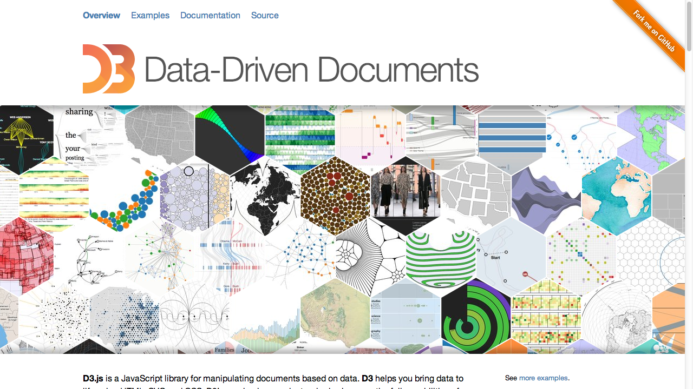
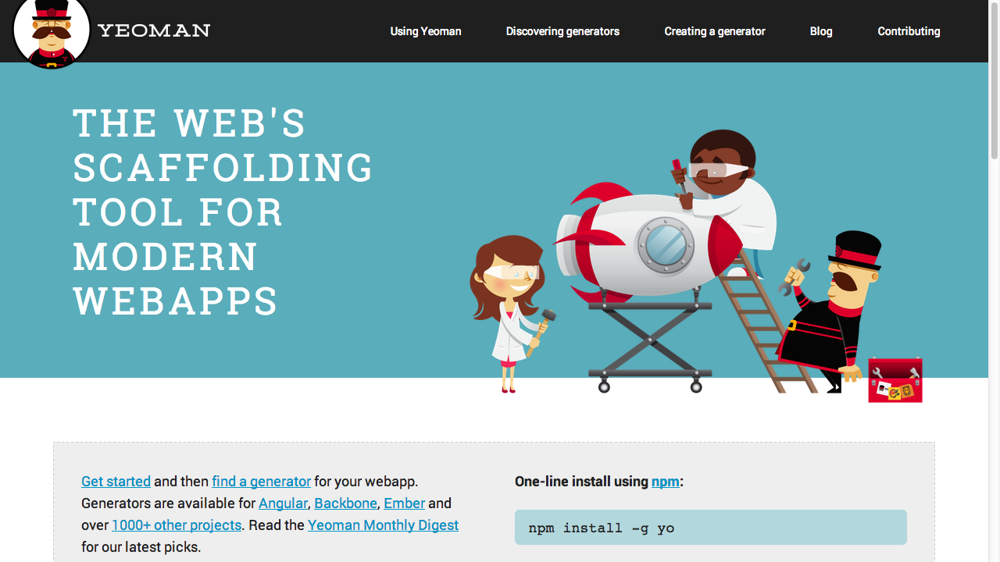

JavaScript Cornucopia
Created by Scott Preston / @scottpreston
About Me
- Practice Lead ICC - JavaScript/Grails/Mobile
- Love JavaScript
- Robots & Smart Home Running in JS
Overview
- Part 1. Outline / Theory JS - https://github.com/scottpreston/presentations
- Part 2. Robot Demo - https://github.com/scottpreston/feynman-jr
Reveal.JS
Presentation written using a JS Library, found here: https://github.com/hakimel/reveal.js
The Fundementals
- JS Objects
- Scoping
- Callbacks & Async
Object Examples
var a = {}; // easiest object ever
var b = new Object(); // js for java developers
function foo() {
this.bar = function() {};
}; // functions are objects too
foo.prototype.barbar = function() {};
var fooo = {
bar: function() {}
}; // literal
More Info on JS Object
https://developer.mozilla.org/en-US/docs/Web/JavaScript/Reference
A Note On Scope
- Global Scope
- Local (functional) Scope
- this - Keyword
Global Scope
<script>
var a = 123;
function foo(str) {
alert(str);
}
foo(a);
</script>
Function Scope
<script>
var a = 123;
function foo(str) {
var newString = str + "!!!";
alert(newString);
}
foo(a);
</script>
Function Scope with this
<script>
var a = 123;
function foo(str) {
var self = this;
this.newString = str + "!!!";
this.popup = function() {
alert(this.newString); // WILL THIS WORK?
alert(self.newString); // OR THIS?
}
}
var f = new foo(a);
foo.popup();
</script>
Immediate Anonymous Functions
Have you heard of these?
Anonymous Function Example
They look like normal functions but...
function hello() {
alert('hi all!');
}(); // two added parens cause immediate execution
Note on Convention
(function hello() {
alert('hi all!');
})(); // two added parens cause immediate execution
Modules
var Module = (function () {
alert('hi all!');
})();
var Module = (function () {
var privateMethod1 = function() {};
var privateMethod2 = function() {};
return {
publicMethod: function() {
// ...
}
}
})();
Modules Everywhere
var Module = (function () {
alert('hi all!');
})();
// or jQuery Pattern?
(function () {
var m = function() {
alert('hi all!');
};
window.Module = m;
window.jQuery = window.$ = m;
})();
Libraries
AMD / RequireJS
A.M.D. - Asynchronous Module Definition
Dynamically appends <script> elements to DOM.

How to load JavaScript in the 90's
Who Still Does This?
<script src="js/jquery.js" type="application/javascript"></script>
<script src="js/script.js" type="application/javascript"></script>
<script src="js/script2.js" type="application/javascript"></script>
<script src="js/script3.js" type="application/javascript"></script>
Including The Library
<script data-main="scripts/main" src="scripts/require.js"></script>
Defining Modules
define(["./cart", "./inventory"], function(cart, inventory) {
//return an object to define the "my/shirt" module.
return {
color: "blue",
size: "large",
addToCart: function() {
inventory.decrement(this);
cart.add(this);
}
}
});
Requiring Modules
require(["one", "two", "three"], function (one, two, three) {
var o = new one();
// do something
});
Handlebars

Sample Handlebars Template
<script id="entry-template" type="text/x-handlebars-template">
<div class="entry">
<h1>{{title}}</h1> <!---- This Line -->
<div class="body">
{{body}} <!---- This Line -->
</div>
</div>
</script>
<script>
var source = $("#entry-template").html();
var template = Handlebars.compile(source);
var context = {title: "My New Post", body: "This is my first post!"}
var html = template(context);
</script>
Underscore or _
D3
Data. Driven. Design.
https://github.com/mbostock/d3/wiki/Gallery

Fabric JS
Working with Canvas
Canvas JS
More Working With Canvas
NodeJS
Server Side JavaScript

Why Server Side JS?
- Non-Blocking IO
- Tooling - Builds, Automating Test, Etc
- Great For Robots!
NPM
Node Package Manager
npm install serialport -g // globally
npm install serialport --save-dev // locally
JS Build Systems
Remember This?
<script src="js/jquery.js" type="application/javascript"></script>
<script src="js/script.js" type="application/javascript"></script>
<script src="js/script2.js" type="application/javascript"></script>
<script src="js/script3.js" type="application/javascript"></script>
GruntJS

GulpJS

Sample Gulp File
var gulp = require('gulp'),
sass = require('gulp-sass'),
rename = require('gulp-rename');
// Include Our Plugins
var jshint = require('gulp-jshint');
var concat = require('gulp-concat');
var uglify = require('gulp-uglify');
var rename = require('gulp-rename');
var scripts = ['../lunchosaurs/*.js', '../lunchosaurs/**/*.js'];
var scss = ['../../sass/*.scss'];
var libs = ['../bower_components/angular/angular.js',
'../bower_components/angular-route/angular-route.js',
'../bower_components/jquery/dist/jquery.js',
'../bower_components/bootstrap/dist/bootstrap.js'];
// Lint Task
gulp.task('lint', function () {
return gulp.src(scripts)
.pipe(jshint())
.pipe(jshint.reporter('default'));
});
gulp.task('styles', function () {
return gulp.src(scss)
.pipe(sass({ style: 'expanded' }))
.pipe(gulp.dest('../../css'));
});
// Concatenate & Minify JS - LIBRARIES
gulp.task('libs', function () {
return gulp.src(libs)
.pipe(concat('libs-all.js'))
.pipe(gulp.dest('../dist'))
.pipe(rename('libs-all.min.js'))
.pipe(uglify())
.pipe(gulp.dest('../dist'));
});
// Concatenate & Minify JS -- APP
gulp.task('appscripts', function () {
return gulp.src(scripts)
.pipe(concat('lunchosaurs.js'))
.pipe(gulp.dest('../dist'));
});
// Watch Files For Changes
gulp.task('watch', function () {
gulp.watch(scripts, ['lint', 'appscripts']);
gulp.watch(scss, ['styles']);
});
// Default Task
gulp.task('default', ['lint', 'libs', 'appscripts', 'styles', 'watch']);
Bower

Bower Sample
npm install bower -g
include bower.json in a directory and type "bower install"
{
"name": "scottpreston",
"version": "0.0.1",
"dependencies": {
"jquery": "latest",
"bootstrap": "latest",
"underscore": "latest",
"jasmine": "latest",
"handlebars.js": "latest"
},
"private": true
} or "bower install jquery"
Yeoman

Yeoman Sample
Yeoman generators might use Grunt!
npm install -g generator-gulp-angular
mkdir my-new-project
cd my-new-project
yo gulp-angular [app-name]
ExpressJS
ExpressJS Sample
Simple Static Web Server
Install
npm install -g express serve-staticSample Code
var connect = require('connect'),
serveStatic = require('serve-static');
var app = connect();
app.use(serveStatic("../"));
app.listen(5000);PhantomJS
PhantomJS Continued
- Headless Web-Kit
- Browser that runs via command line and executes JavaScript
- Can be driven from Selenium WebDriver
- Stand-Alone Binary (No NodeJS Required)
- Uses node conventions
PhantomJS QuickStart
var page = require('webpage').create();
page.open('http://www.phantomjs.org/', function (status) {
console.log('Loading a web page');
phantom.exit();
});
PhantomJS Twitter Scrape
var page = require('webpage').create();
page.open(encodeURI("https://mobile.twitter.com/icctalk"), function (status) {
// Check for page load success
var followers = page.evaluate(function () {
return document.querySelector('div.statnum').innerText;
});
console.log('you have ' + followers + ' followers..');
phantom.exit();
});
CasperJS

CasperJS QuickStart
var casper = require('casper').create();
casper.start('http://casperjs.org/', function() {
this.echo(this.getTitle());
});
casper.thenOpen('http://phantomjs.org', function() {
this.echo(this.getTitle());
});
casper.run();
CasperJS Image Capture
var casper = require('casper').create();
casper.start();
var viewports = [
{name: 'normal', width: 1024, height: 768},
{name: 'iphone', width: 320, height: 480}
];
casper.each(viewports, function(casper, viewport) {
casper.then(function() {
casper.viewport(viewport.width, viewport.height);
});
casper.thenOpen('http://casperjs.org/', function () {
this.capture('casperjs-' + viewport.name + '.png');
});
});
casper.run();
PhantomCSS
https://github.com/Huddle/PhantomCSS

Node WebKit
https://github.com/rogerwang/node-webkit

Sample Config Image Capture
{
"main": "index.html",
"name": "nw-demo",
"description": "demo app of node-webkit",
"version": "0.1.0",
"keywords": [ "demo", "node-webkit" ],
"window": {
"title": "node-webkit demo",
"toolbar": true,
"frame": false,
"width": 800,
"height": 500,
"position": "mouse",
"min_width": 400,
"min_height": 200,
"max_width": 800,
"max_height": 600
},
"webkit": {
"plugin": true
}
}